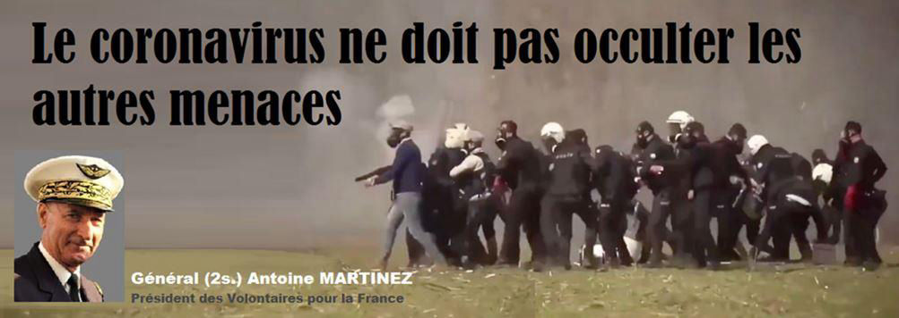
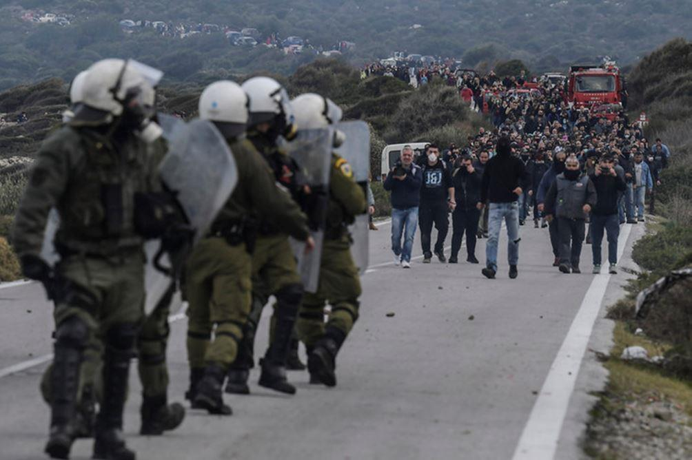

Le coronavirus ne doit pas occulter les autres menaces
par Antoine MARTINEZ

La pandémie du coronavirus touche aujourd'hui l'ensemble de la planète et force est de constater que tous les États consacrent tous leurs efforts pour la maîtriser et l'éradiquer dans les meilleurs délais. C'est une priorité car la menace que représente ce virus et les conséquences de la crise générale provoquée est réelle mais elle occulte tout le reste, mis en sommeil à présent, et notamment d'autres dangers, c'est à dire ceux qui touchent à la sécurité des États et des peuples.
Parmi ces derniers, la Turquie en représente un sérieux. Il ne faut, en effet, pas oublier l'attitude indigne et hostile du président turc, M. Erdogan, manifestée il y a deux mois avec ce qu'il convient de qualifier de déclaration de guerre à l'Europe contre laquelle il a décidé d'appliquer des mesures de représailles et de chantage injustifiées et inacceptables. Car, effectivement, en quoi l'Europe est-elle responsable des lourdes pertes subies par l'armée turque sur le territoire syrien qu'elle avait envahi et sur lequel elle opérait aux côtés des milices islamistes ?
En ouvrant, selon sa propre déclaration, les portes pour les migrants après la mort de ses soldats visés par les bombardements aériens des forces syriennes, M. Erdogan a voulu faire pression sur l'Union européenne (UE) et les membres de l'OTAN pour obtenir – invoquant effrontément leur appartenance à la même alliance militaire – leur soutien dans ses opérations militaires engagées, il faut le souligner, illégalement contre un État souverain.
Le chantage scandaleux exercé par la Turquie sur l'UE s'est traduit par la menace de l'envoi de millions de migrants en Europe après l'ouverture de ses frontières. C'est ainsi que des milliers de migrants clandestins, dont une grande partie originaires du Maghreb et de l'Afrique sub-sahélienne ou d'Afghanistan, ont été poussés vers la frontière grecque dans l'intention de provoquer une nouvelle submersion migratoire en Europe. Les forces grecques ont cependant, pendant plusieurs jours, réussi à refouler ces hordes de migrants agressifs, fanatisés et manifestement conditionnés par les autorités turques en faisant usage de gaz lacrymogènes et de canons à eau.
Le président turc, obsédé par son rêve du retour de l'empire ottoman et du rétablissement du califat islamique a voulu profiter de la confusion et de l'affolement provoqués par la pandémie du coronavirus pour ouvrir les vannes d'une nouvelle invasion en Europe à l'image de celle de 2015 dont il est, il ne faudrait pas l'oublier, l'un des artisans. Mais la Turquie ayant elle-même été touchée par cette pandémie, M. Erdogan a dû momentanément modifier ses plans et ses priorités laissant les migrants découragés rebrousser chemin, certains d'entre eux étant contaminés par le Covid 19.
Là ne s'arrête pas son irresponsabilité d'ailleurs, puisque, profitant de la crise sanitaire, la présidente de la Commission européenne a réussi à obtenir des membres de l'UE l'ouverture de négociations pour l'adhésion de l'Albanie, pays mafieux par excellence où tous les dirigeants sont corrompus et où opèrent de nombreuses mafias et trafiquants d'armes, et de la Macédoine du Nord dont la plupart des hommes politiques sont corrompus par les mafias albanaises ! C'est délirant !
Face à cette situation critique créée par l'attitude hostile et irresponsable du président turc, chacun a pu constater avec sidération le silence assourdissant de nos dirigeants politiques qui ont même poussé la soumission jusqu'à présenter les condoléances de la France pour les soldats turcs tués sur le territoire syrien ! Nos dirigeants sont-ils simplement devenus fous ? Quant à l'UE, comme en 2015, elle confirme son incompétence, son incapacité à protéger les peuples européens et son inaptitude à gérer une situation de crise.
Cela étant exposé, il faut bien comprendre que le dangereux président turc n'a pas renoncé à son projet de déclencher une nouvelle invasion de clandestins sur l'Europe. Dès que les effets de la crise sanitaire dus à la pandémie se seront estompés, il recommencera. Nos dirigeants politiques et les responsables de l'UE le savent et sont prévenus. Ils ne pourront pas dire qu'ils ne savaient pas. Compte tenu de leur absence de réaction forte il y a deux mois, il faut douter de leur volonté d'anticiper et d'élaborer une stratégie diplomatique et militaire visant à ramener M. Erdogan à la raison.
Ce serait pourtant nécessaire car aider et pousser des clandestins à franchir par la force une frontière, en l'occurrence celle de la Grèce qui constitue une partie de la frontière extérieure de l'UE, est une déclaration de guerre. Par ailleurs, il faut bien reconnaître que jusqu'ici, nos dirigeants politiques et les médias aux ordres se sont bien gardés de faire connaître la situation difficile à laquelle ont été soumis sur le terrain nos amis Grecs que nous devons remercier car ils ont défendu nos frontières. Que feront nos dirigeants lorsque les Turcs reprendront leur opération que ce soit en termes de réponse à une telle agression ou que ce soit en matière d'information continue à destination des citoyens sur les développements de la situation réelle sur le terrain ?
C'est pour tenter de satisfaire ce besoin de savoir qui pourrait être contenu, voire réduit et contrôlé par nos dirigeants et donc répondre à la nécessité d'informer notamment nos compatriotes sur la situation réelle sur le terrain que les Volontaires Pour la France (VPF) ont établi des contacts fructueux avec des patriotes grecs pour mettre en place une coopération en matière d'échange d'information. C'est ainsi qu'une cellule chargée d'assurer la veille/alerte en relation avec nos amis grecs est en cours de mise en place par les VPF. Elle sera en mesure d'élaborer, en fonction des informations collectées au cours de la veille ou du suivi de la situation ou d'informations d'alerte communiquées en cas d'incident ou d'événement grave, des synthèses élaborées ou des flashs d'information qui seront publiés sur le site des VPF et diffusés largement. Il est, en effet, important que face à l'apathie et à l'absence de volonté de défendre nos frontières contre une invasion islamique démontrées jusqu'à présent que ce soit par l'UE ou que ce soit par nos dirigeants politiques – et ils continueront dans la même voie criminelle et suicidaire – nos compatriotes puissent disposer d'informations et suivre la situation. Ils pourront alors se mobiliser pour appeler à défendre les intérêts des peuples européens et notamment l'intégrité territoriale de leurs États.
La délivrance de ce savoir est essentielle et comporte plusieurs objectifs. Le premier, c'est d'informer malgré la rétention d'information organisée par les gouvernants et les médias complaisants, voire lèche-bottes. Un deuxième objectif découle tout naturellement de notre rôle de lanceurs d'alerte : développer notre capacité d'influence sur nos compatriotes ou sur le pouvoir politique. Enfin, un troisième objectif vient ponctuer notre démarche : montrer à nos amis grecs, par les contacts, les échanges établis et nos actions, le soutien des patriotes français à leur combat contre l'invasion islamique. Leur combat est le nôtre, c'est celui des Européens fidèles à leur héritage historique, spirituel et culturel qu'ils comptent bien défendre. Au-delà, c'est le réveil des peuples européens face à une UE incapable de les protéger et qui les trahit et nuit gravement à leur identité, à leur civilisation et donc à leur avenir qui doit être visé.
Ainsi, fidèles à notre vocation, nous refusons de rester spectateurs et avons résolument choisi d'être acteurs. Le patriotisme, c'est l'avenir.
Partager cette page